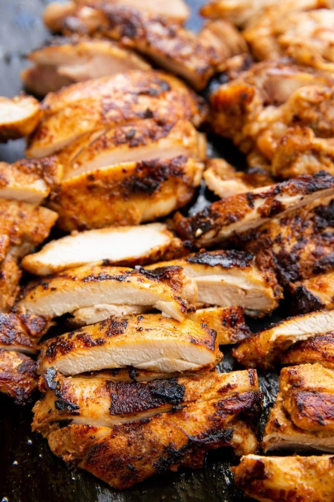

Copy Cat Chipotle Chicken
This is a recipe for a all the Chipotle lovers not wanting to spend hundreds a week on their favorite bowl/burritos.
I will be showing you how to make a delicious copy-cat recipe of the famous chipotle chicken without breaking your bank.
For all the meal preppers, this recipe will be the one you'll return to multiple times a month. Enjoy!
Ingredients
- 1-2 lbs de-boned skinless Chicken Thighs
- 1 can of La Costena Chipotle peppers in adobo sauce
- 2 tbsp Extra Virgin Olive Oil
- 1 tsp Onion powder
- 1 tsp Dried oregano
- 1 tsp Cumin
- 1 tbsp Chilli Powder
- 1-2 tsp Salt
optional
- 1 tsp black pepper
INSTRUCTIONS
- Add 1 can of chipotle peppers in adobo sauce to a blender and blend well
- Add 1 cup of blended sauce onto a mixing bowl
- Add 2 tbsp of olive oil accompanied by the onion powder,dried oregano,cumin,chilli powder,and salt
- Mix well
- Add the chicken thighs and coat well
optional - allow to marinate in fridge for at least 30 min to a full 24 hours.
- Add 2 tbsp of olive oil to a cooking pan on medium-high heat
- Cook for 5-6 minutes on each side or until temperature is 170-175 degreed F.